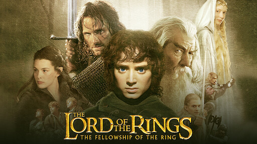
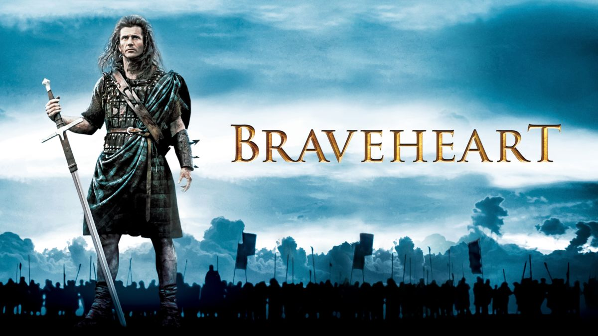

Persoonlijke gegevens
Naam: Yelle Witdouck
Adres: Wippe 1 8640 Oostvleteren
Telefoonnummer: 0486 18 17 99
Email-adres:
y.witdouck@gmail.com
Hobby's
Films & series kijken
Muziek luisteren
Schoolgaan
Likes
Favoriete films:
Harry Potter series
Lord of the rings series
Braveheart


Favoriete muziekgenres
Rap
R&b
Pop